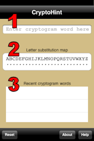

The CryptoHint Main screen has 3 main input fields.
The text field (1) is used for entry of a cryptogram word. When empty it displays a "Enter cryptogram word here" prompt. When the user taps the text field the keyboard will be displayed; hitting the Return key will dismiss the keyboard and allow the entered word to be parsed. Parsing consists of removing any numeric digits and punctuation and converting the word to uppercase. The wordlist will then be searched for words matching the cryptogram word letters pattern.
The letter substitution map (2) displays how letters in the cryptogram are mapped to letters in the solution. Tapping the display leads the user to the substitution letter picker screen. When CryptoHint starts up the map is empty; as the user specifies cryptogram/solution letter pairs and cryptogram word/solution word matches, the substitution map is filled in and used to improve subsequent word searches.
The table lists a history of the most recent cryptogram words (3). Tapping on a given word in the list will repeat a search for that word. This saves the user from retyping the cryptogram word.
The CryptoHint main screen also has buttons in the bottom toolbar.